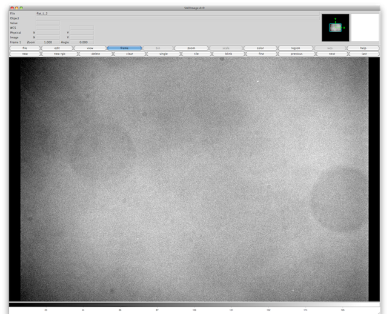

Basic Reductions of Image Data

Image Reduction Overview
The first goal of image reduction is to correct two types of errors in the CCD data: additive and multiplicative errors. As you recollect from previous discussions on displaying images, we are thinking of an image as a matrix of numbers, each number represents the brightness in that pixel. Additive errors add to the values of pixels, multiplicative errors multiply the value in a pixel. To correct additive errors, we simply subtract something from the image and to correct multiplicative errors, we simply divide the image by something.
Additive errors arise from two primary sources: bias offset & dark current. In this document, I will primarily leave the detailed description of what gives rise to these effects to class discussion and focus on the IRAF methods of correcting them. There are two types of calibration images that might be used to correct these additive errors: dark and bias frames. A dark is simply an image taken by the CCD for the same exposure length as the exposure it is meant to correct (it should also be taken at the same CCD operating temperature). A dark will correct both bias offset and dark current. A bias frame is essentially a zero length dark frame, so it corrects bias offset, but not dark current (note: a bias frame is sometimes called a zero frame). Why the two methods? Well, research CCDs are cryogenically cooled (usually to liquid nitrogen temperature, 77 K), so they do not suffer from substantial dark current, thus data from a cryogenically cooled CCD often need only be corrected by a bias frame. A CCD which is cooled, but not to cryogenic temperatures (such as those we use at SBO), needs to be corrected for both bias offset and dark current, so we will use dark frames instead of bias frames.
Multiplicative errors can arise from several sources: differences in quantum efficiency, illumination differences (vignetting), and dust shadows (aka dust doughnuts). All of these represent a difference in sensitivity from pixel to pixel in the chip, thus different pixels need to be multiplied up to larger values to match more sensitive pixels. To correct this, we take a calibration image called a flat field. The flat is simply an image of an evenly illuminated field (usually a white spot on the inside of the dome).
The mathematical representation of the basic reductions to correct additive and multiplicative errors is:
(raw_image - dark1)
final_image = ---------------------------------
(flat - dark2) / <flat - dark2>
There is actually one more source of errors in images: cosmic rays. Cosmic rays are high energy particles which pass through our CCD detector and deposit large amounts of energy. This deposition of energy mimics the deposition of energy by which CCDs detect photons. The best way to pick out cosmic rays is to take multiple images, then any bright pixels which show up in that position in only one image is a cosmic ray.
Combining the Biases and Darks
Any time we add, subtract, multiply, or divide two images, we are adding the noise in the two images. This is undesirable in that we will end up with larger noise in our science exposure if we apply the corrections described above. To combat this, we try to take many calibration exposures and combine them to make a single calibration exposure (be it a dark, bias, or flat). This reduces the noise in our calibration exposure, so that it will hopefully add only a negligible amount of noise to our science exposure. I recommend taking at least three and preferably nine or more of each of my calibration images (the reason for taking an odd number will become clear later) and then combining those images into a single master calibration image.
When we combine these calibration images, we will not perform an average as one might expect. Instead we will median the images. This means that the resulting value in a pixel in the final image is the median of the values in that same pixel in the input images. The advantage of median combining the images is that when one image has a very discrepant value (i.e. from a cosmic ray) this doesn't dramatically affect the resultant value (a median is more resistant to one discrepant value than an average). If you've taken at least three images, then this will reject almost all cosmic ray events. Note that when there are an even number of input values to a median, then it will average the two middle values (thus the motivation for taking an odd number of images to combine).
There are two ways of dealing with dark frames if you have science exposures of several different exposure times. You can take dark frames for each exposure time used (including those used for flats) and make a combined master dark frame for each exposure time. This is straightforward, but you end up with a lot of files (and potentially lots of darks to take).
The other method is to take only long dark exposures and then scale them to the length of any exposure you want to correct. Most CCDs are very linear in their dark current, so this is often a good solution. You have to remember though that a dark frame (the raw image taken by a CCD when the shutter is closed) contains not only dark current, but also the bias offset. As a result, you must subtract a bias frame from the master dark before scaling it.
In the example we are about to try, we will use the dark scaling method. The first step is to combine the bias frames in to a master bias and then combine the dark frames in to a master dark frame. We will use some of the tools we discussed in previous sections. First we will create list files for handling the many file names, the use the type command to print out the contents of those files:
ecl> files *bias.fits > list_bias.txt
ecl> files *dark_600s.fits > list_dark.txt
ecl> type list_bias.txt
001_bias.fits
002_bias.fits
003_bias.fits
004_bias.fits
005_bias.fits
006_bias.fits
007_bias.fits
ecl> type list_dark.txt
010_dark_600s.fits
011_dark_600s.fits
012_dark_600s.fits
As you can see, we have seven bias frames and three 600s dark frames. Now we will use the imcombine task to combine those in to a master bias frame and a master dark frame. The imcombine task does just what you might imagine, it combines images using different combination methods (i.e. average, median, sum, etc.). The syntax is that the first parameter is the list of images to be combines (or a list file), the second parameter is the output filename (which must not already exist), and other parameters can be specified optionally.
ecl> imcombine @list_bias.txt MasterBias combine=median
May 26 15:04: IMCOMBINE
combine = median, scale = none, zero = none, weight = none
blank = 0.
Images
001_bias.fits
002_bias.fits
003_bias.fits
004_bias.fits
005_bias.fits
006_bias.fits
007_bias.fits
Output image = MasterBias, ncombine = 7
ecl> imcombine @list_dark.txt MasterDark600s combine=median
May 26 15:05: IMCOMBINE
combine = median, scale = none, zero = none, weight = none
blank = 0.
Images
010_dark_600s.fits
011_dark_600s.fits
012_dark_600s.fits
Output image = MasterDark600s, ncombine = 3
In this case I chose to use the combine=median parameter to make sure that we used a median combine instead of an average.
If we were going to use this data to dark subtract images which had exposure times of 600 seconds, then we would have no need to scale the darks. In our case, however, we are going to correct images which were 300 second exposures. We cannot, however, simply divide the MasterDark600s.fits file by 2 because we only want to scale the dark current component, not the bias offset. What we do is to use the master bias to remove the bias offset from the master dark. We do this with the imarith task which performs image arithmetic (adding, subtracting, dividing, or multiplying two images). The syntax is the first parameter is the first image, the second parameter is the operation (+, -, *, /), the third parameter is the second image, and the fourth parameter is the resulting image.
ecl> imarith MasterDark600s - MasterBias DarkCurrent600s
By subtracting the bias from the dark, we are isolating the dark current, so I have named the resulting file DarkCurrent600s.fits. Now we can scale that file:
ecl> imarith DarkCurrent600s / 2 DarkCurrent300s
If we then look at the image statistics for these files:
ecl> imstat MasterBias,MasterDark600s,DarkCurrent600s,DarkCurrent300s
# IMAGE MODE MEAN STDDEV MIN MAX
MasterBias 1024. 1024. 6.315 992. 1367.
MasterDark600s 1025. 1027. 122. 984. 33607.
DarkCurrent600s 0.9128 2.531 122. -48. 32551.
DarkCurrent300s 0.4564 1.266 61.01 -24. 16276.
... we see what we would expect. Both the master bias and master dark frames have modes of over 1000 counts. The master dark has a slightly larger mode (roughly 1 count) indicating a relatively small dark current. The dark current frames have modes just above zero, so they have no bias offset and the mode and mean of the 600s dark current frame are twice that of the 300s frame.
Dark Subtracting the Flats
Before combining the flats, we need to dark subtract the individual flat exposures. In the example data provided, we see that all of the flat exposure times are either 0.4 or 0.5 seconds, very short exposures. Since we see from the statistics of the dark frames (above) that 600 seconds of dark current adds less than 1 count to the image, these exposures of less than one second should have negligible dark current in them. For that reason, we could easily only be subtracting a bias frame, but we will go through the steps of subtracting the dark current as well to illustrate the process.
ecl> imarith flat_L_2 - MasterBias flat_L_2_BiasSub
ecl> imarith flat_L_3 - MasterBias flat_L_3_BiasSub
ecl> imarith flat_L_4 - MasterBias flat_L_4_BiasSub
ecl> imarith flat_L_5 - MasterBias flat_L_5_BiasSub
ecl> imarith flat_L_6 - MasterBias flat_L_6_BiasSub
Now we need to make a scaled dark for our 0.5 second flat exposures (I will only use the L filter flats in this example and they do not have any 0.4 second exposures).
ecl> imarith DarkCurrent600s.fits / 1200 DarkCurrent_500ms.fits
... and now subtract that scaled dark from the bias subtracted darks because the flat images have both a bias offset and dark current in them:
ecl> imarith flat_L_2_BiasSub - DarkCurrent_500ms flat_L_2_DarkSub
ecl> imarith flat_L_3_BiasSub - DarkCurrent_500ms flat_L_3_DarkSub
ecl> imarith flat_L_4_BiasSub - DarkCurrent_500ms flat_L_4_DarkSub
ecl> imarith flat_L_5_BiasSub - DarkCurrent_500ms flat_L_5_DarkSub
ecl> imarith flat_L_6_BiasSub - DarkCurrent_500ms flat_L_6_DarkSub
Combining the Flats
We also need to combine our flat images as well. Combining flats is a bit trickier than darks and biases for two reasons. First, we now have to keep track of different filters (we don’t want to combine R filter flats with B filter flats) and second, because we want to use a median combine on the flats, we need to scale each flat to a common value.
Scaling of flats is necessary because depending on which technique you used to take flats (twilight flats or dome flats for example), each individual frame might have a slightly different brightness level than another. In the case of twilight flats, the sky brightness is changing which changes the total flux in our flat frame and in the case of dome flats, sometimes you can not trust that the lights illuminating the dome flat are perfectly uniform in brightness over time.
We will scale the flat frames by the mode of each image (the mode is the most common value). If you have flats with a strong vignetting pattern or strong dust shadows, you might want to only look at the mode in a relatively uniform part of the image. For example, take a look at the image below:

This flat is fairly clean, but when stretched to show small differences in brightness, you can see a vignetting pattern (the darkening at the corners) and several dust shadows. Large shadows are from dust which is located far from the CCD chip (on the field flattener in this case) and small shadows are from dust closer to the CCD chip (probably on the CCD entrance window or filters). This image looks clean enough that we can safely use the mode of this image to scale flats. To determine the normalization factor, we will use the imstat task which we have encountered before.
ecl> imstat flat_L*DarkSub.fits
# IMAGE MODE MEAN STDDEV MIN MAX
flat_L_2_DarkSub.fits 44581. 44429. 510.5 38450. 54997.
flat_L_3_DarkSub.fits 41942. 41821. 490.2 35723. 43726.
flat_L_4_DarkSub.fits 39726. 39625. 468. 34404. 44745.
flat_L_5_DarkSub.fits 36403. 36343. 426. 30925. 41996.
flat_L_6_DarkSub.fits 34371. 34270. 408.5 29612. 37140.
To create a normalized flat, we just need to divide each flat by the mode.
ecl> imarith flat_L_2_DarkSub / 44581 flat_L_2_norm
ecl> imarith flat_L_3_DarkSub / 41942 flat_L_3_norm
ecl> imarith flat_L_4_DarkSub / 39726 flat_L_4_norm
ecl> imarith flat_L_5_DarkSub / 36403 flat_L_5_norm
ecl> imarith flat_L_6_DarkSub / 34371 flat_L_6_norm
Now we can look at the image statistics of the normalized flats and we see that the modes have all been renormalized to 1.
ecl> imstat flat_L*norm.fits
# IMAGE MODE MEAN STDDEV MIN MAX
flat_L_2_norm.fits 1. 0.9966 0.01145 0.8625 1.234
flat_L_3_norm.fits 1. 0.9971 0.01169 0.8517 1.043
flat_L_4_norm.fits 1. 0.9974 0.01178 0.866 1.126
flat_L_5_norm.fits 1. 0.9983 0.0117 0.8495 1.154
flat_L_6_norm.fits 1. 0.997 0.01188 0.8615 1.081
Now to combine the normalized flats, we use the imcombine task as we did with the darks:
ecl> imcombine flat_L*norm.fits MasterFlat_L combine=median
May 31 16:05: IMCOMBINE
combine = median, scale = none, zero = none, weight = none
blank = 0.
Images
flat_L_2_norm.fits
flat_L_3_norm.fits
flat_L_4_norm.fits
flat_L_5_norm.fits
flat_L_6_norm.fits
Output image = MasterFlat_L, ncombine = 5
You can scale and combine flats in other filters similarly to get master flats for those filters.
Processing the Raw Images
Now we need to use the master bias, dark, and flat files we created to correct the raw image data.
ecl> imarith NGC4945-002_L - MasterBias NGC4945-002_L_BiasSub
ecl> imarith NGC4945-002_L_BiasSub - DarkCurrent300s NGC4945-002_L_DarkSub
ecl> imarith NGC4945-002_L_DarkSub / MasterFlat_L NGC4945-002_L_final
For brevitys sake, I’ve only shown the commands to do this for one image, but you can extend it to the other sample files to get “final” versions of each individual image.
A Side Comment on IRAF
If the examples above seem like a lot of steps to go through then you should know that there are a lot of tools in IRAF which will make these steps easier. In the case of the above reductions, there is a the noao.imred.ccdred package which, if configured properly, can reduce everything we did above to four commands: zerocombine, darkcombine, flatcombine, ccdproc. I have spelled this out step by step primarily to show you how IRAF syntax works and to show and example of basic image reductions. The difficulty in using these more advanced tools is that you usually have to spend a lot of time up front configuring them for your data. When using the noao.imred.ccdred package, you can save configurations of the tasks which are specific to a specific telescope and instrument. Once that is done, the entire image reduction process can be performed in just a few steps.
Aligning the Images
Aligning images can be a time consuming process. There are many different algorithms to accomplish it and thus many different IRAF tasks can be combined in scripts to align images. In this tutorial, I will detail only one method (star matching) as it is fairly simple and easy to understand. The task we will use is called imalign.
The imalign task will take several inputs. Let’s start by examining the lpar page for imalign:
ecl> lpar imalign
input = Input images
reference = Reference image
coords = Reference coordinates file
output = Output images
(shifts = "") Initial shifts file
(boxsize = 7) Size of the small centering box
(bigbox = 11) Size of the big centering box
(negative = no) Are the features negative ?
(background = INDEF) Reference background level
(lower = INDEF) Lower threshold for data
(upper = INDEF) Upper threshold for data
(niterate = 3) Maximum number of iterations
(tolerance = 0) Tolerance for convergence
(maxshift = INDEF) Maximum acceptable pixel shift
(shiftimages = yes) Shift the images ?
(interp_type = "linear") Interpolant
(boundary_typ = "nearest") Boundary type
(constant = 0.) Constant for constant boundary extension
(trimimages = yes) Trim the shifted images ?
(verbose = yes) Print the centers, shifts, and trim section ?
(list = "")
(mode = "ql")
There are 5 key inputs we will use. The input images are of course the images we want to align. The reference image is the image we want the others aligned to match. The coordinates file is a list of pixels positions of stars in the reference image, the task will look for stars near those positions in all the images. Once it has found the stars, it will accurately centroid each one and use the average of the position offsets to decide how to shift the images. The output images are a list of new image file names in to which the aligned images will be saved. Lastly, we will use the optional shifts file input to give the task an initial guess for the offsets. If the images start off nearly aligned (only a few pixels off) then this input is unnecessary, the task will find the stars and center them. If the images start off with larger offsets, then this is needed as a starting point so that the task can find the alignment stars in the other images.
As a first step, I need to choose a reference image. In this case, I will simply choose the first image NGC4945-002_L_final.fits as my reference. Now I need to make a list of stars in that image which will be used during the alignment. To do that, I will first display the image:
ecl> displ NGC4945-002_L_final.fits 1
z1=360.8123 z2=720.6514
Now I will use the imexamine task to extract the coordinates of the centers of various stars. This task is very useful and when you first begin to do aperture photometry, you will find this useful. For now, we will only use part of the power of imexamine to extract the positions of stars.
Now if you mouse over your displayed image in ds9, you should see that the cursor has become a circle. If we hover that circle over a star and press the a key (for “aperture photometry”) we get information about that star:
ecl> imexam
# COL LINE COORDINATES
# R MAG FLUX SKY PEAK E PA BETA ENCLOSED MOFFAT DIRECT
165.24 918.25 165.2375 0.
5.61 13.14 55665. 461.3 11074. 0.05 65 6.66 1.79 2.15 1.87
The task prints out a guide telling you what information you are getting for each star (those are the two lines with the # comment sign at the beginning). For now, we are only interested in the column and line position on the CCD, which are the first two numbers in the first line (each star gets two lines of data). The star I chose has a pixel position of 165.24, 918.25.
For an input to the imalign task, I would like to have a list of several stars (about a dozen) that are used in alignment. I will choose stars which are fairly isolated from neighbors in order to decrease the likelihood that the centering algorithm within imalign catches the wrong star. This particular image is in a fairly star dense region of the Milky Way, so it is important to try to choose isolated stars.
ecl> imexam
# COL LINE COORDINATES
# R MAG FLUX SKY PEAK E PA BETA ENCLOSED MOFFAT DIREC
165.24 918.25 165.2375 0.
5.61 13.14 55665. 461.3 11074. 0.05 65 6.66 1.79 2.15 1.8
101.22 971.28 101.2189 0.
6.05 12.80 75773. 454.9 12742. 0.07 -6 7.37 1.92 2.39 2.0
1442.74 937.71 1442.737 0.
5.50 15.65 5484. 472. 1161. 0.57 -61 22.9 1.75 1.90 1.8
674.99 995.27 674.9924 0.
5.02 14.45 16627. 466.6 3928. 0.09 -22 2.52 1.70 1.66 1.6
801.71 759.22 801.7111 0.
5.06 15.32 7459. 471.4 2126. 0.64 -65 1.56 1.66 1.46 1.6
247.53 325.76 247.5337 0.
5.52 13.63 35354. 460.3 12473. 0.08 -78 0.89 1.79 1.07 1.8
295.59 308.73 295.5909 0.
5.53 14.77 12398. 461.4 3271. 0.15 -43 1.43 1.84 1.40 1.8
621.11 137.73 621.11 0.
5.51 13.95 26210. 464.8 5368. 0.15 64 6.59 1.79 1.95 1.8
636.16 557.22 636.164 0.
5.00 15.40 6901. 482.2 1622. 0.04 65 11.4 1.69 1.74 1.6
919.66 178.21 919.6563 0.
5.35 14.89 11035. 484.4 2509. 0.10 9 2.48 1.76 1.62 1.7
1293.42 446.00 1293.42 0.
5.46 13.72 32389. 472.3 6940. 0.12 -89 35.8 1.74 1.93 1.8
1417.51 210.43 1417.51 0.
6.04 15.04 9618. 473.8 3169. 0.18 -5 0.99 1.93 1.14 2.0
1453.44 606.83 1453.438 0.
5.63 13.56 37642. 470. 6794. 0.36 -23 2.50 1.84 1.57 1.8
ecl>
When I am done choosing stars (by hovering over them and pressing the a key), I quit the imexam task with the q key.
To create my coordinates list for the imalign task, I simply copy and paste the pixel coordinates of each star in to a text file with one set of pixel coordinates per line. Remember, each star occupies two lines on the output of imexam, so you only want the first two numbers on every other line. In the end, my list of star positions is saved in a file called StarPositions.txt and it looks like this:
ecl> cat StarPositions.txt
165.24 918.25
101.22 971.28
1442.74 937.71
674.99 995.27
801.71 759.22
247.53 325.76
295.59 308.73
621.11 137.73
636.16 557.22
919.66 178.21
1293.42 446.00
1417.51 210.43
1453.44 606.83
In this case, I’ve used the unix cat command (which works in IRAF as well) to display the contents of a text file. You could also use the IRAF page command.
Now I want to create our other input file which is the list of estimated shifts. To do this, I will manually find the same star in each image I want to align, determine its pixel coordinates. Because I don’t need to be very accurate for this, I will not use imaexamine, but instead read the pixel position off of the ds9 display which shows where the cursor is. Using this, I get pixel coordinates for the three images of:
NGC4945-002_L_final: 282 941
NGC4945-003_L_final: 279 940
NGC4945-004_L_final: 282 939
These are just my notes, they are not the input for the task. Also note that these shifts are very small, only a few pixels, in this case it is not necessary to give imalign an initial shifts file because the shifts are small. We are including this as an example, because some data will need these initial shifts to align successfully.
To determine the initial shifts, I need to determine the the difference between the coordinates, but there we have an uncertainty in the sign. Is the x shift between the first and second image +3 or -3? To decide that, I need to look at the help page for the imalign task. Here is an excerpt of the relevant portion of the help page:
shifts = ""
A text file containing the initial estimate for each image of
the shift in each axis relative to the reference image. These
estimates are used to modify the coordinates of the registration
objects prior to centering. The format of the file is one
image per line with the x and y shifts in columns one and two
respectively. The sense of the shifts is such that:
Xshift=Xref-Xin and Yshift=Yref-Yin. If shifts is null, a
coarse centering pass will be made to attempt to determine the
initial shifts.
You can also find online versions of the IRAF help pages at http://iraf.noao.edu/iraf-help.html. Just type the command you want to look up in to the search box at the bottom.
So I want to use Xshift=Xref-Xin, so after some quick calculations, I make an initial shifts file called InitialShifts.txt which looks like this:
ecl> cat InitialShifts.txt
0 0
+3 +1
0 +2
Now that I’ve created by coordinates file and my initial shifts file, I can run imalign:
ecl> imalign NGC4945-002_L_final,NGC4945-003_L_final,NGC4945-004_L_final NGC4945-002_L_final StarPositions.txt NGC4945-002_L_aligned,NGC4945-003_L_aligned,NGC4945-004_L_aligned shifts=InitialShifts.txt
#Coords Image X-center Err Y-center Err Num
NGC4945-002_L_final 165.229 (0.010) 918.230 (0.009) 1
NGC4945-002_L_final 101.261 (0.009) 971.271 (0.008) 2
NGC4945-002_L_final 1442.716 (0.030) 937.672 (0.032) 3
NGC4945-002_L_final 675.012 (0.017) 995.241 (0.016) 4
NGC4945-002_L_final 801.738 (0.025) 759.164 (0.024) 5
NGC4945-002_L_final 247.557 (0.013) 325.796 (0.011) 6
NGC4945-002_L_final 295.552 (0.021) 308.723 (0.020) 7
NGC4945-002_L_final 621.096 (0.014) 137.732 (0.014) 8
NGC4945-002_L_final 636.144 (0.026) 557.195 (0.026) 9
NGC4945-002_L_final 919.646 (0.023) 178.198 (0.022) 10
NGC4945-002_L_final 1293.406 (0.012) 446.011 (0.012) 11
NGC4945-002_L_final 1417.529 (0.026) 210.410 (0.024) 12
NGC4945-002_L_final 1453.471 (0.019) 606.887 (0.014) 13
NGC4945-003_L_final 163.033 (0.010) 917.615 (0.009) 1
NGC4945-003_L_final 99.080 (0.009) 970.692 (0.008) 2
NGC4945-003_L_final 1440.423 (0.030) 937.147 (0.034) 3
NGC4945-003_L_final 672.729 (0.018) 994.723 (0.016) 4
NGC4945-003_L_final 799.527 (0.024) 758.730 (0.023) 5
NGC4945-003_L_final 245.418 (0.012) 325.178 (0.012) 6
NGC4945-003_L_final 293.408 (0.021) 308.131 (0.021) 7
NGC4945-003_L_final 618.887 (0.014) 137.108 (0.014) 8
NGC4945-003_L_final 633.920 (0.026) 556.685 (0.027) 9
NGC4945-003_L_final 917.441 (0.024) 177.634 (0.023) 10
NGC4945-003_L_final 1291.095 (0.012) 445.512 (0.012) 11
NGC4945-003_L_final 1415.175 (0.025) 209.976 (0.024) 12
NGC4945-003_L_final 1451.235 (0.022) 606.406 (0.014) 13
NGC4945-004_L_final 166.245 (0.010) 915.838 (0.010) 1
NGC4945-004_L_final 102.285 (0.010) 968.873 (0.009) 2
NGC4945-004_L_final 1443.388 (0.035) 935.720 (0.039) 3
NGC4945-004_L_final 675.963 (0.020) 993.018 (0.019) 4
NGC4945-004_L_final 802.676 (0.028) 757.040 (0.028) 5
NGC4945-004_L_final 248.737 (0.014) 323.420 (0.014) 6
NGC4945-004_L_final 296.686 (0.025) 306.398 (0.024) 7
NGC4945-004_L_final 622.168 (0.016) 135.503 (0.017) 8
NGC4945-004_L_final 637.113 (0.029) 554.983 (0.035) 9
NGC4945-004_L_final 920.684 (0.026) 176.057 (0.025) 10
NGC4945-004_L_final 1294.232 (0.013) 444.007 (0.013) 11
NGC4945-004_L_final 1418.231 (0.030) 208.484 (0.029) 12
NGC4945-004_L_final 1454.264 (0.020) 604.972 (0.015) 13
#Refcoords Reference X-center Err Y-center Err Num
NGC4945-002_L_final 165.229 (0.010) 918.230 (0.009) 1
NGC4945-002_L_final 101.261 (0.009) 971.271 (0.008) 2
NGC4945-002_L_final 1442.716 (0.030) 937.672 (0.032) 3
NGC4945-002_L_final 675.012 (0.017) 995.241 (0.016) 4
NGC4945-002_L_final 801.738 (0.025) 759.164 (0.024) 5
NGC4945-002_L_final 247.557 (0.013) 325.796 (0.011) 6
NGC4945-002_L_final 295.552 (0.021) 308.723 (0.020) 7
NGC4945-002_L_final 621.096 (0.014) 137.732 (0.014) 8
NGC4945-002_L_final 636.144 (0.026) 557.195 (0.026) 9
NGC4945-002_L_final 919.646 (0.023) 178.198 (0.022) 10
NGC4945-002_L_final 1293.406 (0.012) 446.011 (0.012) 11
NGC4945-002_L_final 1417.529 (0.026) 210.410 (0.024) 12
NGC4945-002_L_final 1453.471 (0.019) 606.887 (0.014) 13
#Shifts Image X-shift Err Y-shift Err N Internal
NGC4945-002_L_final 0.000 (0.008) 0.000 (0.008) 13 (0.000,0.000
)
NGC4945-003_L_final 2.230 (0.008) 0.538 (0.008) 13 (0.018,0.018
)
NGC4945-004_L_final -0.947 (0.008) 2.171 (0.008) 13 (0.044,0.049
)
#Trim_Section = [4:1599,4:1200]
# Shifting images:
# Trimming images: corrected section = [4:1599,4:1200]
Lets examine this in detail. First, I chose to use all the images as inputs. This might seem logical at first, but you could also make the case, that the image NGC4945-002_L_final.fits should not have been part of the input because it is the reference. As the reference, it will not be shifted (by definition), so why have it as input? The reason is that imalign also trims the images so that all images show the same area. This option can be turned off, but by default it is on. Using the reference image in the input list means that this image will get trimmed like the rest of the images meaning they will line up properly after the process is done.
After giving all three image file names as inputs, I have it StarPositions.txt, the positions of 13 stars in all images that it will measure positions for and use in the alignment. Then I have three new file names for the output images (appending _aligned instead of _final) in the file name. Finally I gave the initial shifts estimate file. Now that I’ve explained why the reference image was given as input, you should also understand why the first line of the shifts file has an initial shift of 0 0. That is the shift between the reference image and itself!
Combining Images
Now that the images are aligned, we can combine them to make a single deeper image. We will use the imcombine task for this:
ecl> imcombine NGC4945-*_L_aligned.fits NGC4945_L combine=median
Aug 15 9:58: IMCOMBINE
combine = median, scale = none, zero = none, weight = none
blank = 0.
Images
NGC4945-002_L_aligned.fits
NGC4945-003_L_aligned.fits
NGC4945-004_L_aligned.fits
Output image = NGC4945_L, ncombine = 3
In this example, I used wildcards to generate the input list instead of listing all three filenames separately. The output is file is specified with the second argument, so the resulting image is written to NGC4945_L.fits (IRAF assumes the .fits extension is none is specified). Lastly, I gave the argument combine=median. There are several methods of combining images. The most straightforward is average, where the values for each pixel are simply averaged together. The median method can be preferable in some cases where we might want to reject or ignore single extreme values such as cosmic ray hits. IRAF also has several other, more sophisticated combine options which you can read about in the help file.
Send questions or comments to Josh Walawender via email at jmwalawender@gmail.com